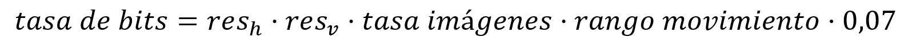
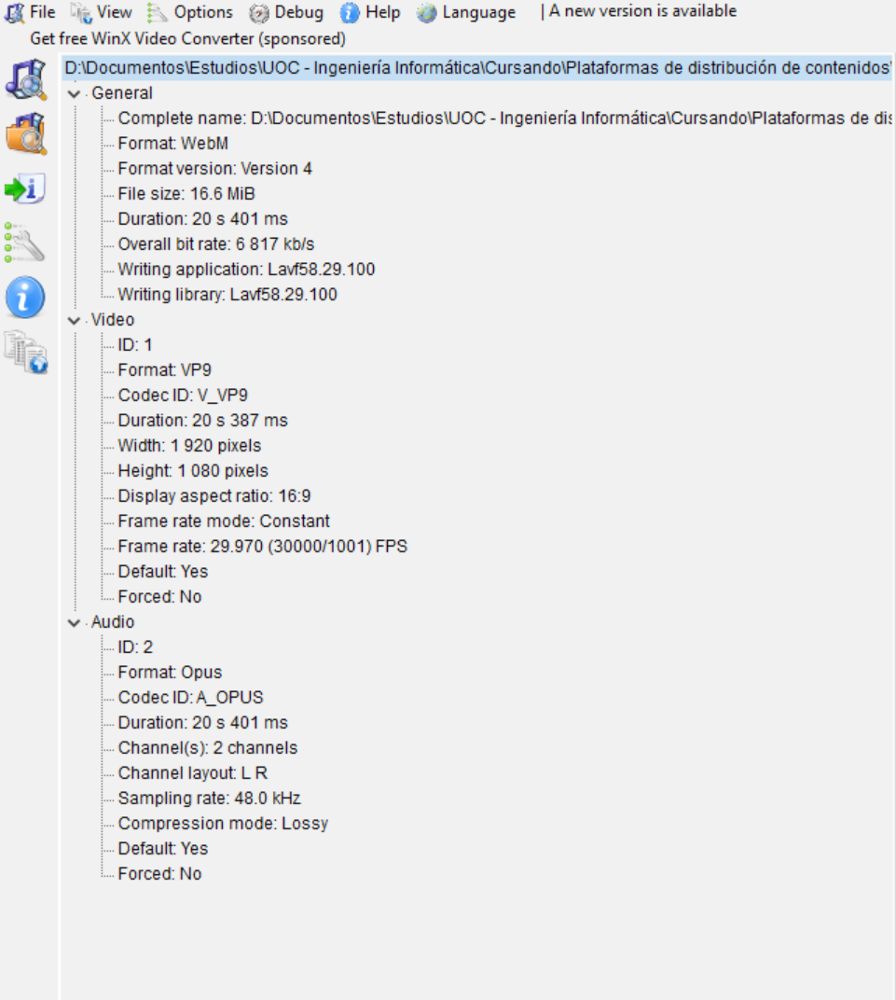
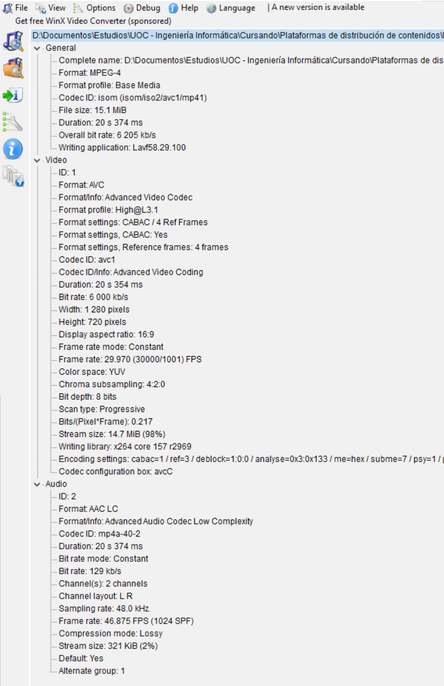
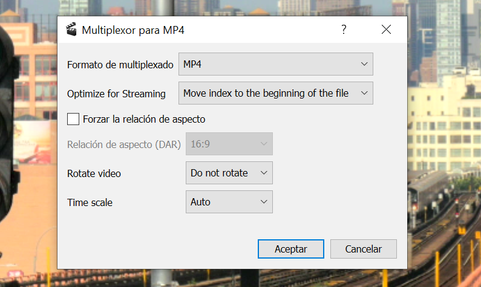

Tarea 1.1
Elige un clip de vídeo de máximo 20 segundos (puedes crearlo con tu dispositivo móvil, que tenga objetos en detalle y en movimiento) y codifícalo con Avidemux eligiendo el formato y resolución que creas adecuadas para su publicación en web. Teniendo en cuenta que no todos los navegadores aceptan todos los códecs, codifica el vídeo en los formatos necesarios para que sea compatible con el máximo de navegadores posible. Explica las decisiones tomadas en la codificación y el porqué de cada una. Confirma con la herramienta MediaInfo que lo ha codificado a la velocidad que querías.
La especificación HTML5 introdujo el elemento video con el propósito de poder reproducir vídeo, sustituyendo parcialmente al elemento object. El elemento video de HTML5 tiene la intención de convertirse en el nuevo estándar para mostrar vídeo en la web, sustituyendo a Adobe Flash que era el estándar de facto previo. Sin embargo, la adopción se ha visto afectada por la falta de acuerdo en que códecs de vídeo y audio deben ser soportados por los navegadores web.
La documentación proporcionada por Mozilla recopila las características de los códecs más usados en la web. Para cada uno de ellos se lista además los contenedores que pueden soportarlo e información adicional como, por ejemplo, la compatibilidad con diferentes navegadores web.
La siguiente tabla pretende resumir la información más relevante que sería necesaria tener en cuenta para tomar la decisión relativa al formato de codificación a utilizar.
| Códec | Contenedor | Descripción | Compatibilidad |
|---|---|---|---|
| VP9 | MP4, Ogg y WebM | Video Processor 9 (VP9) es el sucesor estándar VP8 desarrollado por Google y es completamente abierto y libre de royalties. Su rendimiento de codificación y decodificación es comparable o ligeramente más rápido que el de AVC, pero con mejor calidad. La calidad de video codificado de VP9 es comparable a la de HEVC a velocidades de bits similares. |
|
| VP8 | 3GP, Ogg y WebM | Video Processor 8 (VP8) fue creado inicialmente por On2 Technologies. Tras la compra de On2, Google lanzó VP8 como un formato de video abierto y libre de royalties. En términos de calidad y tasa de compresión, VP8 es comparable a AVC. |
|
| Theora | Ogg | Theora, desarrollado por Xiph.org, es un códec de video abierto y gratuito que puede usarse sin royalties ni licencias. Theora es comparable en calidad y tasas de compresión a MPEG-4 Part 2 Visual y AVC, lo que la convierte en una buena opción. |
|
| AVC (H.264) | 3GP, MP4 y WebM | El estándar de codificación de video avanzada (AVC) está especificado por la especificación ITU H.264 y la especificación MPEG-4 Parte 10. Es un códec basado en compensación de movimiento ampliamente usado en todo tipo de medios, incluida la transmisión de televisión, videoconferencia RTP y como códec de video en discos Blu-Ray. |
|
| HEVC (H.265) | MP4 | El códec de codificación de video de alta eficiencia (HVEC) está definido por el H.265 de la UIT, así como por MPEG-H Parte 2. HEVC fue diseñado para admitir una codificación y decodificación eficiente de video en tamaños que incluyen resoluciones muy altas (incluido el video de 8K). En teoría, HEVC puede lograr tamaños de archivo comprimidos que son la mitad que AVC pero con una calidad de imagen comparable. |
|
Mozilla realiza una serie de recomendaciones a la hora de escoger el contenedor y los contenedores el vídeo empotrado en HTML5 teniendo en cuenta diferentes casos de uso. En el ejercicio se seguirá la recomendación general que se describe a continuación:
- Un contenedor WebM usando el códec VP9 para vídeo y el codec Opus para el audio. Todos son formatos abiertos, libres de royalties y generalmente bien soportados, aunque sólo en los navegadores más recientes, por lo que se recomienda una opción de respaldo.
- Un contenedor MP4 con el códec AVC (H.264) para vídeo y ACC como códec de audio. Esta combinación es también ampliamente soportada por los grandes navegadores web y la calidad es adecuada para la mayoría de los casos de uso.
La tasa de bits a la que se codificará el flujo de vídeo estará íntimamente relacionada con el ancho de banda disponible para la transmisión de datos de los clientes. El objetivo es hacer un uso efectivo de la descarga progresiva de contenido que habilita HTML5 y permitir a los usuarios iniciar la reproducción sin la necesidad de descargar el archivo completamente y sin sufrir pausas durante la reproducción. Esto es posible si el ancho de banda consumido por los flujos de vídeo y audio debe ser menor al ancho de banda disponible para la transmisión de datos.
Para determinar la tasa de bits a la que se codificará el flujo de vídeo, no se considerará el flujo de audio a efectos de este ejercicio, es necesario determinar el ancho de banda disponible para la transmisión de los usuarios. Se pueden considerar dos usuarios tipo:
- Usuarios conectados a Internet mediante una conexión de ADLS doméstica cuyo ancho de banda para la transmisión disponible en el peor de los casos será de 12 Mbit/s.
- Usuarios conectados a una red móvil 4G o, en el peor de los caos, a una red 3G de buena calidad (HSDPA). En este caso se considerará un peor caso de 14.4 Mbit/s.
Como referencia en el documento H.264 Primer se proporciona la siguiente fórmula para estimar la tasa de bits ideal basándose en las características del vídeo:
donde el rango de movimiento es un número entre 1 y 4, siendo 1 bajo movimiento, 2 movimiento medio y 4 una alta cantidad de movimiento, es decir, una gran cantidad de datos que cambian entre imágenes.
Dado que HTTP utiliza la pila TCP/IP el ancho de banda disponible y el retardo de transmisión no están garantizados y pueden ser variables se propone utilizar un 50% del ancho de banda considerado para los usuarios tipo, es decir, el flujo de vídeo se codificará con una tasa de 6.000 Kbit/s.
El número de imágenes por segundo a la que se codificará el clip de vídeo es de 30 imágenes por segundo al tratarse de una velocidad estándar en codificación de vídeo digital y ser la velocidad a la que se encuentra codificado el flujo de vídeo original.
Por último, se seleccionará la resolución a la que se codificará el clip de vídeo. Se ha de tener en cuenta que una resolución excesivamente alta para la tasa de bits utilizada, lo que se traduciría en un factor de compresión alto respecto a la eficiencia del códec, podría traducirse en una pérdida de calidad de imagen.
Con la ayuda de esta ecuación se ha realizado una estimación de la tasa de bits necesaria para codificar el vídeo en tres resoluciones diferentes como se muestra en la tabla inferior.
| Resolución | Rango de movimiento = 1 | Rango de movimiento = 2 | Rango de movimiento = 4 |
|---|---|---|---|
| 1080p (1.920x1080) | 4.253 kbit/s | 8.505 kbit/s | 17.010 kbit/s |
| 720p (1280x720) | 1.890 kbit/s | 3.780 kbit/s | 7.560 kbit/s |
| 480p (852x480) | 839 kbit/s | 1.677 kbit/s | 3.355 kbit/s |
Considerando un rango de movimiento medio, el clip comprimido con el códec AVC (H.264) deberá ser codificado con una resolución de 1280x720 píxeles para garantizar una buena calidad de imagen. Se trata de una resolución adecuada para los dispositivos actuales y permitiría una reproducción de este a pantalla completa sin una pérdida de definición.
El códec VP9 tiene unas características similares a HEVC (H.265), lo que implica que su factor de compresión es hasta un 50% superior a AVC (H.264), por lo que el clip podría ser codificado con una resolución de 1920x1080 píxeles manteniendo la calidad de imagen.
Por tanto, se ha procedido a codificar dos clips de vídeo con las características mostradas a continuación para garantizar la máxima compatibilidad con los navegadores actuales y la mejor calidad de imagen posible para una reproducción continua en el caso de usuarios conectados a través de ADSL o una red móvil 3G HSDPA.
| Característica | Clip principal | Clip de respaldo |
|---|---|---|
| Contenedor | WebM | MP4 |
| Códec vídeo | VP9 | AVC (H.264) |
| Códec audio | Opus | ACC |
| Resolución | 1.920x.1080 píxeles | 1.280x720 píxeles |
| Tasa de imágenes | 30 fps | 30 fps |
| Tasa de bits del flujo de vídeo | 6.000 kbit/s | 6.000 kbit/s |
Las siguientes capturas de pantalla muestran la información que reporta MediaInfo sobre los clips tras codificarlos. Como se puede apreciar en ambos casos la tasa de bits resultante es ligeramente superior a la especificada siendo algo mayor en el caso de WebM y VP9 pese a utilizarse la estrategia de codificación de tasa de bits medio y 2 pasadas.
| WebM - VP9 - Opus | MP4 - AVC (H.264) - ACC |
|---|---|
|  |  |
Por último, hay que destacar que para asegurar que es posible realizar una descarga progresiva es necesario que, en el caso del clip codificado utilizando un contenedor MP4, el bloque de índice que contiene el índice se encuentra al principio del archivo como se muestra en la captura de pantalla de la configuración de Avidemux.
